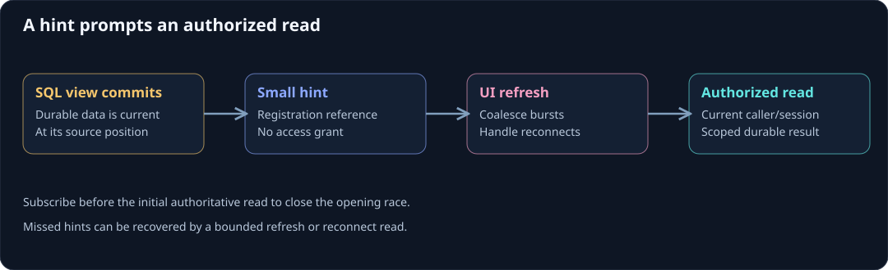

Realtime read-model updates
A command result and the read model shown by a browser can become current at different times. A push channel helps the UI learn that its view may have changed, then refresh through the normal authorized query path.
On this page
The notification is a hint about committed data. It should not become an alternative authorization boundary or a claim that the browser already has the latest state.

Publish after the read model commits
A view writer first commits its SQL change and source receipt. The application can then make a hint available to clients. Publishing before commit can cause the client to read the old view and miss the actual update.
If reliable hint delivery matters, persist notification work with the projection transaction and let a worker deliver it. An in-process callback after commit can be lost on a crash. A periodic read fallback can make a hint-only transport useful while preserving the durable view as the source for readers.
Troolio does not choose the browser transport for you. Server-Sent Events, SignalR, WebSockets, or polling can be application choices, each with connection and reconnection behavior.
Carry a small reference
The workshop helper receives a registration reference and reads its SQL view using the current authenticated user:
public sealed record RegistrationChangedHint(Guid RegistrationId);
public static class RegistrationRefresh
{
public static Task<RegistrationCard?> AfterHintAsync(RegistrationChangedHint hint,
Guid authenticatedUserId, SqlRegistrationCards reader, CancellationToken cancellationToken) =>
reader.GetForUserAsync(hint.RegistrationId, authenticatedUserId, cancellationToken);
}
The hint does not include the attendee's display name or grant access to the registration. A missing or unauthorized row still produces no card. A user's access can change while a connection remains open, so the reader and streaming endpoint must apply the current access policy.
Use a projection version or source position in the hint only when the application has a clear comparison rule. Do not treat positions from unrelated streams as one global ordering.
Close the initial subscription race
A browser can miss an update if it reads the view and subscribes afterward. A safer opening sequence is: authorize the target, establish the subscription, then read the authoritative current view and send the first state/barrier. Later hints trigger another read.
If subscription setup fails, report that state rather than claiming the client is now receiving live updates. For an unreliable hint transport, a bounded refresh interval or reconnect read can compensate for missed hints.
Coalesce bursts
Several events may update one page in a short interval. A hint queue can coalesce repeated references so the browser makes one current read rather than issuing a query for every historical intermediate state. That suits a current-view UI; an audit timeline needs a different model if every transition must be displayed.
Bound subscriptions per session and process, close expired sessions, cancel work on disconnect, and unsubscribe during shutdown. Those limits protect both the transport and the database reader. They are application hosting decisions, not defaults supplied by a projection attribute.
Explain freshness to the user
A useful UI can show an accepted command immediately, then an updating indicator until the relevant view is current. Distinguish a slow projection from a failed command. A client timeout should lead to outcome reconciliation, not blind creation of another registration.
Continue with CQRS in practice, projection design, and read-model design.